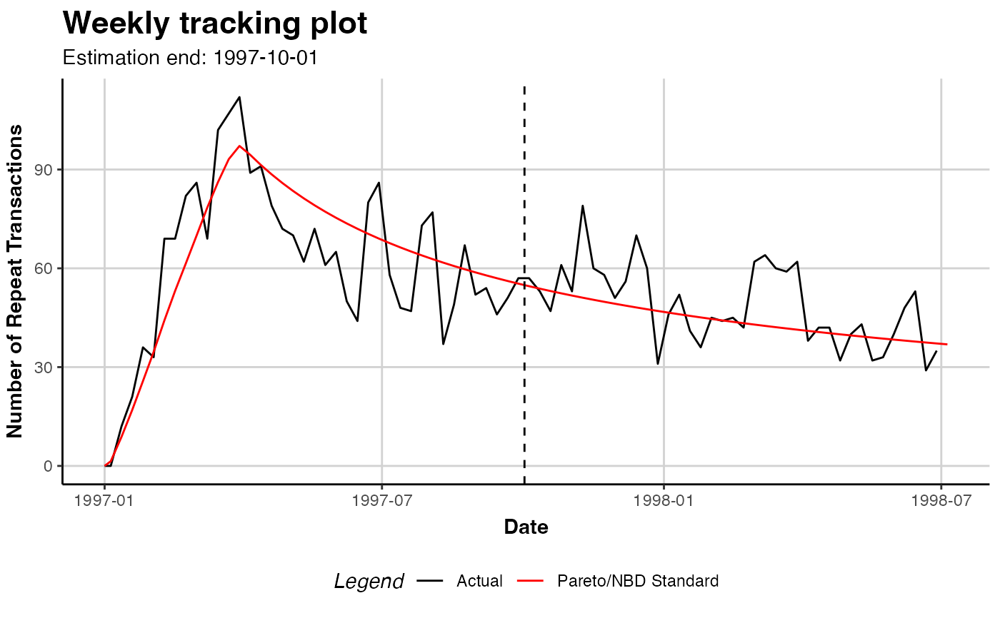

CLVTools is a toolbox for various probabilistic customer attrition models for non-contractual settings. It provides a framework, which is capable of unifying different probabilistic customer attrition models. This package provides tools to estimate the number of future transactions of individual customers as well as the probability of customers being alive in future periods. Further, the average spending by customers can be estimated. Multiplying the future transactions conditional on being alive and the predicted individual spending per transaction results in an individual CLV value.
The implemented models require transactional data from non-contractual businesses (i.e. customers' purchase history).
Development for CLVTools can be followed via the GitHub repository at https://github.com/bachmannpatrick/CLVTools.
Maintainer: Patrick Bachmann patrick.bachmann@business.uzh.ch
Authors:
Niels Kuebler niels.kuebler@uzh.ch
Markus Meierer markus.meierer@business.uzh.ch
Jeffrey Naef naef@stat.math.ethz.ch
Elliot Oblander eoblander23@gsb.columbia.edu
Patrik Schilter patrik.schilter@gmail.com
# \donttest{ data("cdnow") # Create a CLV data object, split data in estimation and holdout sample clv.data.cdnow <- clvdata(data.transactions = cdnow, date.format = "ymd", time.unit = "week", estimation.split = 39, name.id = "Id") # summary of data summary(clv.data.cdnow)#> CLV Transaction Data #> #> Time unit Weeks #> Estimation length 39.0000 Weeks #> Holdout length 38.71429 Weeks #> #> Transaction Data Summary #> Estimation Holdout Total #> Number of customers - - 2357 #> First Transaction in period 1997-01-01 1997-10-02 1997-01-01 #> Last Transaction in period 1997-10-01 1998-06-30 1998-06-30 #> Total # Transactions 4819 1877 6696 #> Mean # Transactions per cust 2.045 2.752 2.841 #> (SD) 2.195 3.026 3.772 #> Mean Spending per Transaction 35.962 37.715 36.453 #> (SD) 43.538 33.725 41.030 #> Total Spending 173300.400 70791.540 244091.940 #> Total # zero repeaters 1411 1675 1218 #> Percentage # zero repeaters 0.599 0.711 0.517 #> Mean Interpurchase time 9.282 8.227 16.017 #> (SD) 7.772 6.256 14.533 #># Fit a PNBD model without covariates on the first 39 periods pnbd.cdnow <- pnbd(clv.data.cdnow, start.params.model = c(r=0.5, alpha=8, s=0.5, beta=10))#>#>#> Pareto NBD Standard Model #> #> Call: #> pnbd(clv.data = clv.data.cdnow, start.params.model = c(r = 0.5, #> alpha = 8, s = 0.5, beta = 10)) #> #> Fitting period: #> Estimation start 1997-01-01 #> Estimation end 1997-10-01 #> Estimation length 39.0000 Weeks #> #> Coefficients: #> Estimate Std. Error z-val Pr(>|z|) #> r 0.55104 0.04733 11.643 < 2e-16 *** #> alpha 10.55523 0.83991 12.567 < 2e-16 *** #> s 0.62519 0.19889 3.143 0.00167 ** #> beta 12.25194 6.63251 1.847 0.06471 . #> --- #> Signif. codes: 0 ‘***’ 0.001 ‘**’ 0.01 ‘*’ 0.05 ‘.’ 0.1 ‘ ’ 1 #> #> Optimization info: #> LL -9615.2415 #> AIC 19238.4830 #> BIC 19261.5436 #> KKT 1 TRUE #> KKT 2 TRUE #> fevals 19.0000 #> Method L-BFGS-B #> #> Used Options: #> Correlation FALSE# Predict 10 periods (weeks) ahead from estimation end # and compare to actuals in this period pred.out <- predict(pnbd.cdnow, prediction.end = 10)#>#>#>#>#># }